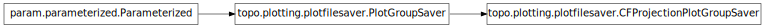

topo.plotting.plotfilesaver¶

Module¶
File saving routines for plots.
Typically called using save_plotgroup in commands/analysis.py, but these objects can also be instantiated explicitly, to save a series of plots.
- class topo.plotting.plotfilesaver.CFProjectionPlotGroupSaver(plotgroup, **params)[source]¶
Bases: topo.plotting.plotfilesaver.PlotGroupSaver
Allows a CFProjectionPlotGroup to be saved as a bitmap file, concatenating all the CF plots into a single image.
- param String filename_format (allow_None=False, constant=False, default=%(filename_prefix)s%(basename)s_%(plot_label)s%(filename_suffix)s.%(file_format)s, instantiate=False, pickle_default_value=True, precedence=None, readonly=False)
- Format string to use for generating filenames for plots. This string will be evaluated in the context of a dictionary that defines various items commonly used when generating filenames, including:: basename: the default sim.basename(), usually name+time() time: the current simulation time (topo.sim.time()) sim_name: the name of the current simulation (topo.sim.name) plot_label: the label specfied in the PlotGroup for this plot file_format: the bitmap image file format for this type of plot plotgroup_name: the name of this PlotGroup
- param String file_format (allow_None=False, constant=False, default=png, instantiate=False, pickle_default_value=True, precedence=None, readonly=False)
- Bitmap image file format to use.
- param String filename_prefix (allow_None=False, constant=False, default=, instantiate=False, pickle_default_value=True, precedence=None, readonly=False)
- Optional prefix that can be used in the filename_format command to disambiguate different simulations or conditions.
- param String filename_suffix (allow_None=False, constant=False, default=, instantiate=False, pickle_default_value=True, precedence=None, readonly=False)
- Optional suffix that can be used in the filename_format command to disambiguate different simulations or conditions.
- class topo.plotting.plotfilesaver.PlotGroupSaver(plotgroup, **params)[source]¶
Bases: param.parameterized.Parameterized
Allows a PlotGroup to be saved as a set of bitmap files on disk.
- param String filename_format (allow_None=False, constant=False, default=%(filename_prefix)s%(basename)s_%(plot_label)s%(filename_suffix)s.%(file_format)s, instantiate=False, pickle_default_value=True, precedence=None, readonly=False)
- Format string to use for generating filenames for plots. This string will be evaluated in the context of a dictionary that defines various items commonly used when generating filenames, including:: basename: the default sim.basename(), usually name+time() time: the current simulation time (topo.sim.time()) sim_name: the name of the current simulation (topo.sim.name) plot_label: the label specfied in the PlotGroup for this plot file_format: the bitmap image file format for this type of plot plotgroup_name: the name of this PlotGroup
- param String file_format (allow_None=False, constant=False, default=png, instantiate=False, pickle_default_value=True, precedence=None, readonly=False)
- Bitmap image file format to use.
- param String filename_prefix (allow_None=False, constant=False, default=, instantiate=False, pickle_default_value=True, precedence=None, readonly=False)
- Optional prefix that can be used in the filename_format command to disambiguate different simulations or conditions.
- param String filename_suffix (allow_None=False, constant=False, default=, instantiate=False, pickle_default_value=True, precedence=None, readonly=False)
- Optional suffix that can be used in the filename_format command to disambiguate different simulations or conditions.
- topo.plotting.plotfilesaver.make_contact_sheet(imgs, (marl, mart, marr, marb), padding)[source]¶
Make a contact sheet (image grid) from a 2D array of PIL images:
imgs 2D array of images marl The left margin in pixels mart The top margin in pixels marr The right margin in pixels marb The bottom margin in pixels padding The padding between images in pixels
Returns a PIL image object.